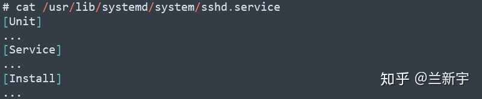
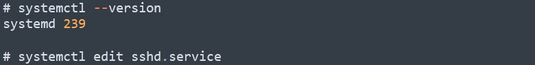
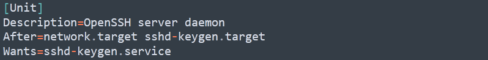
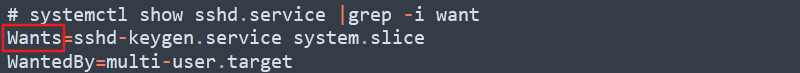
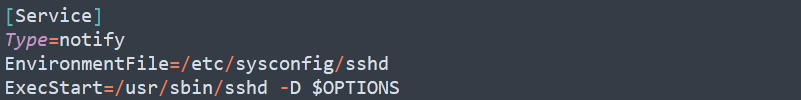
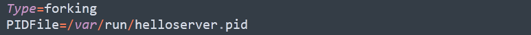
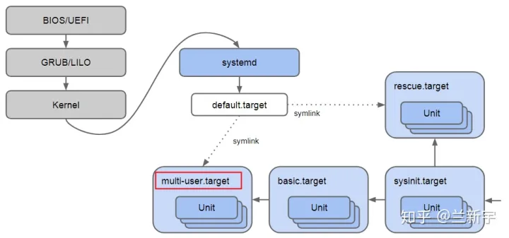
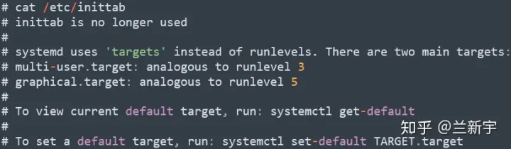
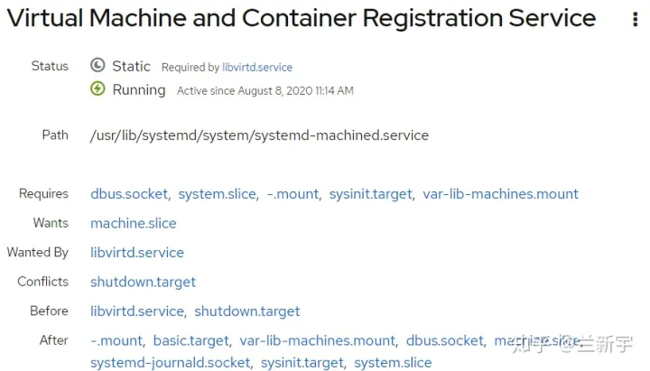

systemd
关于 Linux 中的 1 号初始进程，RHEL 5 默认的是 SysV init，到了 RHEL 6 则是昙花一现的 upstart。而大包大揽、管天管地的 systemd，曾经因为不符合 Unix 小而美的设计风格而饱受争议。但可能确实好用吧（至少笔者是这么觉得的），到了 RHEL 7 时代，systemd 逐渐成为了主角。
初探
下面的命令用来启动服务。
2
3
# 或者
$ service apache2 start
这种方法有两个缺点。
一是启动时间长。init进程是串行启动，只有前一个进程启动完，才会启动下一个进程。
二是启动脚本复杂。init进程只是执行启动脚本，不管其他事情。脚本需要自己处理各种情况，这往往使得脚本变得很长。
Systemd 就是为了解决这些问题而诞生的。它的设计目标是，为系统的启动和管理提供一套完整的解决方案。
根据 Linux 惯例，字母d是守护进程（daemon）的缩写。 Systemd 这个名字的含义，就是它要守护整个系统。
（上图为 Systemd 作者 Lennart Poettering）
使用了 Systemd，就不需要再用init了。Systemd 取代了initd，成为系统的第一个进程（PID 等于 1），其他进程都是它的子进程。
上面的命令查看 Systemd 的版本。
Systemd 的优点是功能强大，使用方便，缺点是体系庞大，非常复杂。事实上，现在还有很多人反对使用 Systemd，理由就是它过于复杂，与操作系统的其他部分强耦合，违反”keep simple, keep stupid”的Unix 哲学。

（上图为 Systemd 架构图）
一个 service 在传统的 Linux 系统中通常被实现为 daemon，在 systemd 中则被抽象成了unit，SysV 中的 init script 在 systemd 中被替换成了 unit file，以大家常用的 sshd 为例，它大概长这样（省略号的部分将在后文展开讲述）：
如果想修改这个文件的内容，需要拿个小本本才能记住 “/usr/lib/systemd/system” 这串长长的路径？其实不必，直接用 “systemctl edit” 命令试一下（自 systemd 的 218 版本后支持此项功能）：
怎么打开的是一个空文件？因为这里默认的是 override 方式，即你在这个文件里写入的，会覆盖掉原来 unit file 中对应的部分，当该 unit 被加载时，systemd 会自动进行文件内容的 merge 操作。
这种将原生文件和修改相分离的做法还是蛮好的，不用在改动配置文件之前因为担心出错，先手动将原文件备份一下（比如命名为 “*.bak”），需要撤销改动又再手动恢复。如果还是比较习惯直接编辑原文件的方式，那就用 “edit –full”。
虽然在实现上勇于革新，但 systemd 还是提供了对 SysV init 的前向兼容性，init script 在 systemd 中依然可以运行。如果想将这些既有的 init script 转换为 systemd 的 unit files，请参考这篇文章。
关于 Linux 中的 1 号初始进程，RHEL 5 默认的是 SysV init，到了 RHEL 6 则是昙花一现的 upstart。而大包大揽、管天管地的 systemd，曾经因为不符合 Unix 小而美的设计风格而饱受争议。但可能确实好用吧（至少笔者是这么觉得的），到了 RHEL 7 时代，systemd 逐渐成为了主角。
初探
一个 service 在传统的 Linux 系统中通常被实现为 daemon，在 systemd 中则被抽象成了unit，SysV 中的 init script 在 systemd 中被替换成了 unit file，以大家常用的 sshd 为例，它大概长这样（省略号的部分将在后文展开讲述）：
如果想修改这个文件的内容，需要拿个小本本才能记住 “/usr/lib/systemd/system” 这串长长的路径？其实不必，直接用 “systemctl edit” 命令试一下（自 systemd 的 218 版本后支持此项功能）：
怎么打开的是一个空文件？因为这里默认的是 override 方式，即你在这个文件里写入的，会覆盖掉原来 unit file 中对应的部分，当该 unit 被加载时，systemd 会自动进行文件内容的 merge 操作。
这种将原生文件和修改相分离的做法还是蛮好的，不用在改动配置文件之前因为担心出错，先手动将原文件备份一下（比如命名为 “*.bak”），需要撤销改动又再手动恢复。如果还是比较习惯直接编辑原文件的方式，那就用 “edit –full”。
虽然在实现上勇于革新，但 systemd 还是提供了对 SysV init 的前向兼容性，init script 在 systemd 中依然可以运行。如果想将这些既有的 init script 转换为 systemd 的 unit files，请参考这篇文章。
细究
接下来好好看看一个 unit file 中的三部分内容分别表示什么（还是以 sshd.service 为例）：
“After“ 限制了启动的顺序，因为 ssh 是网络服务的一种，所以它需要等到 “network” 起来之后才可以启动。至于 “Wants“，则体现了 systemd 的一个特性：可以自动解决启动时的依赖问题。
如果试图手动启动服务 A，而服务 A 依赖于服务 B（比如 sshd.service 依赖于 sshd-keygen.service），那么 systemd 就会自动帮你服务 B 先启动起来。这种依赖关系除了可以通过服务 A 的unit-file看出来，也可以通过 “systemctl list-dependencies” 得知。
然后来到 “Type“ 这一行，如果它的值是 “simple” 或者 “notify”，表明由 “ExecStart” 创建的就是该 service 的主进程。
还有一种传统的 type 是 “forking”，意思是由 “ExecStart” 创建父进程，父进程再 fork 一个子进程作为该 service 的主进程，所以此时通常需配合 “PIDFile” 来标识主进程对应的 pid 文件。
说到最后的这个 “WantedBy“，先来回忆下 SysV init 中经典的 “runlevel” 的概念，它代表了 OS 不同的运行模式（用数字 0~6 表示）。
而在 systemd 中，”runlevel” 被精简成了对应命令行终端（CLI）的 “multi-user target”，和对应图形界面的 “graphical target”。什么是 “target“？可以简单地理解为构成执行环境的一组 unit 的集合（这里 sshd 就是构成 “multi-user target” 的一员）。
那基于 target，怎样在命令行和 GUI 之间切换呢？熟悉 “runlevel” 概念的你，可能还是习惯性地会去 “/etc/inittab” 中寻找答案。虽然这个文件在 systemd 里其实已经没用了，但它还是被留在那里，等待你打开的时候，贴心地告诉你：新的 systemd 中的这两个 “target” 和 “runlevel” 大致是怎样的一种对应关系，以及如何实现设置的切换。
当然，也可以使用基于 web 的 cockpit 来进行切换：
按需激活
除了上面介绍的 service，systemd要管的东西还多着呢，本着「分而治之」的原则，还有很多其他类型的unit，它们大都和 systemd 的按需启动和并行启动有关。这里以 socket unit 为例来进行说明。
作为一个像 sshd 这样的service，它需要监听特定的端口，以便处理来自 client 的连接请求，所以传统的做法是：你得先启动起来，即便之后一直没有 client 发出连接请求，你也得一直保持在线状态，守护进程嘛，这就是你的职责。
而 systemd 采用的做法是：你们这些 service 都先不用启动，需要的 listen socket 都由我来创建和监听，当有真正的连接到来时（比如 ssh client 的请求），那我再把对应的 sshd service 拉起来，然后把这个 socket 交给 sshd。这里，systemd 其实充当了一个 socket 代理的角色。
那在 sshd 得到 systemd 移交的这个 socket 之前，通过这个 socket 监听的消息岂不是收不到？不用担心，systemd 会把代管 socket 期间收到的消息也一并传给 sshd，不会让消息遗漏。
这种激活 service 的方式被称为 “socket-based activation“。除此之外，还有当设备真正挂载才激活的 “device-based activation”，当目录或文件真正改变才激活的 “path-based activation” 等等，反正都是 on-demand，有需求再说，这也再次体现了 “lazy” 的设计思想。
也正是由于这种设计，systemd 才敢进行激进的并行启动，只要 listen socket 都准备好了，就不怕。
系统管理
Systemd 并不是一个命令，而是一组命令，涉及到系统管理的方方面面。
3.1 systemctl
systemctl是 Systemd 的主命令，用于管理系统。
2
3
4
5
6
7
8
9
10
11
12
13
14
15
16
17
18
19
20
$ sudo systemctl reboot
# 关闭系统，切断电源
$ sudo systemctl poweroff
# CPU停止工作
$ sudo systemctl halt
# 暂停系统
$ sudo systemctl suspend
# 让系统进入冬眠状态
$ sudo systemctl hibernate
# 让系统进入交互式休眠状态
$ sudo systemctl hybrid-sleep
# 启动进入救援状态（单用户状态）
$ sudo systemctl rescue
3.2 systemd-analyze
systemd-analyze命令用于查看启动耗时。
2
3
4
5
6
7
8
9
10
11
$ systemd-analyze
# 查看每个服务的启动耗时
$ systemd-analyze blame
# 显示瀑布状的启动过程流
$ systemd-analyze critical-chain
# 显示指定服务的启动流
$ systemd-analyze critical-chain atd.service
3.3 hostnamectl
hostnamectl命令用于查看当前主机的信息。
2
3
4
5
$ hostnamectl
# 设置主机名。
$ sudo hostnamectl set-hostname rhel7
3.4 localectl
localectl命令用于查看本地化设置。
2
3
4
5
6
$ localectl
# 设置本地化参数。
$ sudo localectl set-locale LANG=en_GB.utf8
$ sudo localectl set-keymap en_GB
3.5 timedatectl
timedatectl命令用于查看当前时区设置。
2
3
4
5
6
7
8
9
10
$ timedatectl
# 显示所有可用的时区
$ timedatectl list-timezones
# 设置当前时区
$ sudo timedatectl set-timezone America/New_York
$ sudo timedatectl set-time YYYY-MM-DD
$ sudo timedatectl set-time HH:MM:SS
3.6 loginctl
loginctl命令用于查看当前登录的用户。
2
3
4
5
6
7
8
$ loginctl list-sessions
# 列出当前登录用户
$ loginctl list-users
# 列出显示指定用户的信息
$ loginctl show-user ruanyf
四、Unit
4.1 含义
Systemd 可以管理所有系统资源。不同的资源统称为 Unit（单位）。
Unit 一共分成12种。
- Service unit：系统服务
- Target unit：多个 Unit 构成的一个组
- Device Unit：硬件设备
- Mount Unit：文件系统的挂载点
- Automount Unit：自动挂载点
- Path Unit：文件或路径
- Scope Unit：不是由 Systemd 启动的外部进程
- Slice Unit：进程组
- Snapshot Unit：Systemd 快照，可以切回某个快照
- Socket Unit：进程间通信的 socket
- Swap Unit：swap 文件
- Timer Unit：定时器
systemctl list-units命令可以查看当前系统的所有 Unit 。
2
3
4
5
6
7
8
9
10
11
12
13
14
$ systemctl list-units
# 列出所有Unit，包括没有找到配置文件的或者启动失败的
$ systemctl list-units --all
# 列出所有没有运行的 Unit
$ systemctl list-units --all --state=inactive
# 列出所有加载失败的 Unit
$ systemctl list-units --failed
# 列出所有正在运行的、类型为 service 的 Unit
$ systemctl list-units --type=service
4.2 Unit 的状态
systemctl status命令用于查看系统状态和单个 Unit 的状态。
2
3
4
5
6
7
8
$ systemctl status
# 显示单个 Unit 的状态
$ sysystemctl status bluetooth.service
# 显示远程主机的某个 Unit 的状态
$ systemctl -H root@rhel7.example.com status httpd.service
除了status命令，systemctl还提供了三个查询状态的简单方法，主要供脚本内部的判断语句使用。
2
3
4
5
6
7
8
$ systemctl is-active application.service
# 显示某个 Unit 是否处于启动失败状态
$ systemctl is-failed application.service
# 显示某个 Unit 服务是否建立了启动链接
$ systemctl is-enabled application.service
4.3 Unit 管理
对于用户来说，最常用的是下面这些命令，用于启动和停止 Unit（主要是 service）。
2
3
4
5
6
7
8
9
10
11
12
13
14
15
16
17
18
19
20
21
22
23
24
25
26
$ sudo systemctl start apache.service
# 立即停止一个服务
$ sudo systemctl stop apache.service
# 重启一个服务
$ sudo systemctl restart apache.service
# 杀死一个服务的所有子进程
$ sudo systemctl kill apache.service
# 重新加载一个服务的配置文件
$ sudo systemctl reload apache.service
# 重载所有修改过的配置文件
$ sudo systemctl daemon-reload
# 显示某个 Unit 的所有底层参数
$ systemctl show httpd.service
# 显示某个 Unit 的指定属性的值
$ systemctl show -p CPUShares httpd.service
# 设置某个 Unit 的指定属性
$ sudo systemctl set-property httpd.service CPUShares=500
4.4 依赖关系
Unit 之间存在依赖关系：A 依赖于 B，就意味着 Systemd 在启动 A 的时候，同时会去启动 B。
systemctl list-dependencies命令列出一个 Unit 的所有依赖。
上面命令的输出结果之中，有些依赖是 Target 类型（详见下文），默认不会展开显示。如果要展开 Target，就需要使用--all参数。
五、Unit 的配置文件
5.1 概述
每一个 Unit 都有一个配置文件，告诉 Systemd 怎么启动这个 Unit 。
Systemd 默认从目录/etc/systemd/system/读取配置文件。但是，里面存放的大部分文件都是符号链接，指向目录/usr/lib/systemd/system/，真正的配置文件存放在那个目录。
systemctl enable命令用于在上面两个目录之间，建立符号链接关系。
2
3
# 等同于
$ sudo ln -s '/usr/lib/systemd/system/clamd@scan.service' '/etc/systemd/system/multi-user.target.wants/clamd@scan.service'
如果配置文件里面设置了开机启动，systemctl enable命令相当于激活开机启动。
与之对应的，systemctl disable命令用于在两个目录之间，撤销符号链接关系，相当于撤销开机启动。
配置文件的后缀名，就是该 Unit 的种类，比如sshd.socket。如果省略，Systemd 默认后缀名为.service，所以sshd会被理解成sshd.service。
5.2 配置文件的状态
systemctl list-unit-files命令用于列出所有配置文件。
2
3
4
5
$ systemctl list-unit-files
# 列出指定类型的配置文件
$ systemctl list-unit-files --type=service
这个命令会输出一个列表。
2
3
4
5
6
UNIT FILE STATE
chronyd.service enabled
clamd@.service static
clamd@scan.service disabled
这个列表显示每个配置文件的状态，一共有四种。
- enabled：已建立启动链接
- disabled：没建立启动链接
- static：该配置文件没有
[Install]部分（无法执行），只能作为其他配置文件的依赖- masked：该配置文件被禁止建立启动链接
注意，从配置文件的状态无法看出，该 Unit 是否正在运行。这必须执行前面提到的systemctl status命令。
一旦修改配置文件，就要让 SystemD 重新加载配置文件，然后重新启动，否则修改不会生效。
2
$ sudo systemctl restart httpd.service
5.3 配置文件的格式
配置文件就是普通的文本文件，可以用文本编辑器打开。
systemctl cat命令可以查看配置文件的内容。
2
3
4
5
6
7
8
9
10
11
[Unit]
Description=ATD daemon
[Service]
Type=forking
ExecStart=/usr/bin/atd
[Install]
WantedBy=multi-user.target
从上面的输出可以看到，配置文件分成几个区块。每个区块的第一行，是用方括号表示的区别名，比如[Unit]。注意，配置文件的区块名和字段名，都是大小写敏感的。
每个区块内部是一些等号连接的键值对。
2
3
4
5
Directive1=value
Directive2=value
. . .
注意，键值对的等号两侧不能有空格。
5.4 配置文件的区块
[Unit]区块通常是配置文件的第一个区块，用来定义 Unit 的元数据，以及配置与其他 Unit 的关系。它的主要字段如下。
Description：简短描述Documentation：文档地址Requires：当前 Unit 依赖的其他 Unit，如果它们没有运行，当前 Unit 会启动失败Wants：与当前 Unit 配合的其他 Unit，如果它们没有运行，当前 Unit 不会启动失败BindsTo：与Requires类似，它指定的 Unit 如果退出，会导致当前 Unit 停止运行Before：如果该字段指定的 Unit 也要启动，那么必须在当前 Unit 之后启动After：如果该字段指定的 Unit 也要启动，那么必须在当前 Unit 之前启动Conflicts：这里指定的 Unit 不能与当前 Unit 同时运行Condition...：当前 Unit 运行必须满足的条件，否则不会运行Assert...：当前 Unit 运行必须满足的条件，否则会报启动失败
[Install]通常是配置文件的最后一个区块，用来定义如何启动，以及是否开机启动。它的主要字段如下。
WantedBy：它的值是一个或多个 Target，当前 Unit 激活时（enable）符号链接会放入/etc/systemd/system目录下面以 Target 名 +.wants后缀构成的子目录中RequiredBy：它的值是一个或多个 Target，当前 Unit 激活时，符号链接会放入/etc/systemd/system目录下面以 Target 名 +.required后缀构成的子目录中Alias：当前 Unit 可用于启动的别名Also：当前 Unit 激活（enable）时，会被同时激活的其他 Unit
[Service]区块用来 Service 的配置，只有 Service 类型的 Unit 才有这个区块。它的主要字段如下。
Type：定义启动时的进程行为。它有以下几种值。Type=simple：默认值，执行ExecStart指定的命令，启动主进程Type=forking：以 fork 方式从父进程创建子进程，创建后父进程会立即退出Type=oneshot：一次性进程，Systemd 会等当前服务退出，再继续往下执行Type=dbus：当前服务通过D-Bus启动Type=notify：当前服务启动完毕，会通知Systemd，再继续往下执行Type=idle：若有其他任务执行完毕，当前服务才会运行ExecStart：启动当前服务的命令ExecStartPre：启动当前服务之前执行的命令ExecStartPost：启动当前服务之后执行的命令ExecReload：重启当前服务时执行的命令ExecStop：停止当前服务时执行的命令ExecStopPost：停止当其服务之后执行的命令RestartSec：自动重启当前服务间隔的秒数Restart：定义何种情况 Systemd 会自动重启当前服务，可能的值包括always（总是重启）、on-success、on-failure、on-abnormal、on-abort、on-watchdogTimeoutSec：定义 Systemd 停止当前服务之前等待的秒数Environment：指定环境变量
Unit 配置文件的完整字段清单，请参考官方文档。
六、Target
启动计算机的时候，需要启动大量的 Unit。如果每一次启动，都要一一写明本次启动需要哪些 Unit，显然非常不方便。Systemd 的解决方案就是 Target。
简单说，Target 就是一个 Unit 组，包含许多相关的 Unit 。启动某个 Target 的时候，Systemd 就会启动里面所有的 Unit。从这个意义上说，Target 这个概念类似于”状态点”，启动某个 Target 就好比启动到某种状态。
传统的init启动模式里面，有 RunLevel 的概念，跟 Target 的作用很类似。不同的是，RunLevel 是互斥的，不可能多个 RunLevel 同时启动，但是多个 Target 可以同时启动。
2
3
4
5
6
7
8
9
10
11
12
13
14
15
16
$ systemctl list-unit-files --type=target
# 查看一个 Target 包含的所有 Unit
$ systemctl list-dependencies multi-user.target
# 查看启动时的默认 Target
$ systemctl get-default
# 设置启动时的默认 Target
$ sudo systemctl set-default multi-user.target
# 切换 Target 时，默认不关闭前一个 Target 启动的进程，
# systemctl isolate 命令改变这种行为，
# 关闭前一个 Target 里面所有不属于后一个 Target 的进程
$ sudo systemctl isolate multi-user.target
Target 与 传统 RunLevel 的对应关系如下。
2
3
4
5
6
7
8
9
Runlevel 0 | runlevel0.target -> poweroff.target
Runlevel 1 | runlevel1.target -> rescue.target
Runlevel 2 | runlevel2.target -> multi-user.target
Runlevel 3 | runlevel3.target -> multi-user.target
Runlevel 4 | runlevel4.target -> multi-user.target
Runlevel 5 | runlevel5.target -> graphical.target
Runlevel 6 | runlevel6.target -> reboot.target
它与init进程的主要差别如下。
（1）默认的 RunLevel（在
/etc/inittab文件设置）现在被默认的 Target 取代，位置是/etc/systemd/system/default.target，通常符号链接到graphical.target（图形界面）或者multi-user.target（多用户命令行）。（2）启动脚本的位置，以前是
/etc/init.d目录，符号链接到不同的 RunLevel 目录 （比如/etc/rc3.d、/etc/rc5.d等），现在则存放在/lib/systemd/system和/etc/systemd/system目录。（3）配置文件的位置，以前
init进程的配置文件是/etc/inittab，各种服务的配置文件存放在/etc/sysconfig目录。现在的配置文件主要存放在/lib/systemd目录，在/etc/systemd目录里面的修改可以覆盖原始设置。
七、日志管理
Systemd 统一管理所有 Unit 的启动日志。带来的好处就是，可以只用journalctl一个命令，查看所有日志（内核日志和应用日志）。日志的配置文件是/etc/systemd/journald.conf。
journalctl功能强大，用法非常多。
2
3
4
5
6
7
8
9
10
11
12
13
14
15
16
17
18
19
20
21
22
23
24
25
26
27
28
29
30
31
32
33
34
35
36
37
38
39
40
41
42
43
44
45
46
47
48
49
50
51
52
53
54
55
56
57
58
59
60
61
62
63
64
65
66
67
68
69
70
71
72
73
74
75
76
77
78
79
80
$ sudo journalctl
# 查看内核日志（不显示应用日志）
$ sudo journalctl -k
# 查看系统本次启动的日志
$ sudo journalctl -b
$ sudo journalctl -b -0
# 查看上一次启动的日志（需更改设置）
$ sudo journalctl -b -1
# 查看指定时间的日志
$ sudo journalctl --since="2012-10-30 18:17:16"
$ sudo journalctl --since "20 min ago"
$ sudo journalctl --since yesterday
$ sudo journalctl --since "2015-01-10" --until "2015-01-11 03:00"
$ sudo journalctl --since 09:00 --until "1 hour ago"
# 显示尾部的最新10行日志
$ sudo journalctl -n
# 显示尾部指定行数的日志
$ sudo journalctl -n 20
# 实时滚动显示最新日志
$ sudo journalctl -f
# 查看指定服务的日志
$ sudo journalctl /usr/lib/systemd/systemd
# 查看指定进程的日志
$ sudo journalctl _PID=1
# 查看某个路径的脚本的日志
$ sudo journalctl /usr/bin/bash
# 查看指定用户的日志
$ sudo journalctl _UID=33 --since today
# 查看某个 Unit 的日志
$ sudo journalctl -u nginx.service
$ sudo journalctl -u nginx.service --since today
# 实时滚动显示某个 Unit 的最新日志
$ sudo journalctl -u nginx.service -f
# 合并显示多个 Unit 的日志
$ journalctl -u nginx.service -u php-fpm.service --since today
# 查看指定优先级（及其以上级别）的日志，共有8级
# 0: emerg
# 1: alert
# 2: crit
# 3: err
# 4: warning
# 5: notice
# 6: info
# 7: debug
$ sudo journalctl -p err -b
# 日志默认分页输出，--no-pager 改为正常的标准输出
$ sudo journalctl --no-pager
# 以 JSON 格式（单行）输出
$ sudo journalctl -b -u nginx.service -o json
# 以 JSON 格式（多行）输出，可读性更好
$ sudo journalctl -b -u nginx.serviceqq
-o json-pretty
# 显示日志占据的硬盘空间
$ sudo journalctl --disk-usage
# 指定日志文件占据的最大空间
$ sudo journalctl --vacuum-size=1G
# 指定日志文件保存多久
$ sudo journalctl --vacuum-time=1years
一、开机启动
对于那些支持 Systemd 的软件，安装的时候，会自动在/usr/lib/systemd/system目录添加一个配置文件。
如果你想让该软件开机启动，就执行下面的命令（以httpd.service为例）。
上面的命令相当于在/etc/systemd/system目录添加一个符号链接，指向/usr/lib/systemd/system里面的httpd.service文件。
这是因为开机时，Systemd只执行/etc/systemd/system目录里面的配置文件。这也意味着，如果把修改后的配置文件放在该目录，就可以达到覆盖原始配置的效果。
二、启动服务
设置开机启动以后，软件并不会立即启动，必须等到下一次开机。如果想现在就运行该软件，那么要执行systemctl start命令。
执行上面的命令以后，有可能启动失败，因此要用systemctl status命令查看一下该服务的状态。
2
3
4
5
6
7
8
9
10
11
12
13
14
15
16
17
18
httpd.service - The Apache HTTP Server
Loaded: loaded (/usr/lib/systemd/system/httpd.service; enabled)
Active: active (running) since 金 2014-12-05 12:18:22 JST; 7min ago
Main PID: 4349 (httpd)
Status: "Total requests: 1; Current requests/sec: 0; Current traffic: 0 B/sec"
CGroup: /system.slice/httpd.service
├─4349 /usr/sbin/httpd -DFOREGROUND
├─4350 /usr/sbin/httpd -DFOREGROUND
├─4351 /usr/sbin/httpd -DFOREGROUND
├─4352 /usr/sbin/httpd -DFOREGROUND
├─4353 /usr/sbin/httpd -DFOREGROUND
└─4354 /usr/sbin/httpd -DFOREGROUND
12月 05 12:18:22 localhost.localdomain systemd[1]: Starting The Apache HTTP Server...
12月 05 12:18:22 localhost.localdomain systemd[1]: Started The Apache HTTP Server.
12月 05 12:22:40 localhost.localdomain systemd[1]: Started The Apache HTTP Server.
上面的输出结果含义如下。
Loaded行：配置文件的位置，是否设为开机启动Active行：表示正在运行Main PID行：主进程IDStatus行：由应用本身（这里是 httpd ）提供的软件当前状态CGroup块：应用的所有子进程- 日志块：应用的日志
三、停止服务
终止正在运行的服务，需要执行systemctl stop命令。
有时候，该命令可能没有响应，服务停不下来。这时候就不得不”杀进程”了，向正在运行的进程发出kill信号。
此外，重启服务要执行systemctl restart命令。
四、读懂配置文件
一个服务怎么启动，完全由它的配置文件决定。下面就来看，配置文件有些什么内容。
前面说过，配置文件主要放在/usr/lib/systemd/system目录，也可能在/etc/systemd/system目录。找到配置文件以后，使用文本编辑器打开即可。
systemctl cat命令可以用来查看配置文件，下面以sshd.service文件为例，它的作用是启动一个 SSH 服务器，供其他用户以 SSH 方式登录。
2
3
4
5
6
7
8
9
10
11
12
13
14
15
16
17
18
19
[Unit]
Description=OpenSSH server daemon
Documentation=man:sshd(8) man:sshd_config(5)
After=network.target sshd-keygen.service
Wants=sshd-keygen.service
[Service]
EnvironmentFile=/etc/sysconfig/sshd
ExecStart=/usr/sbin/sshd -D $OPTIONS
ExecReload=/bin/kill -HUP $MAINPID
Type=simple
KillMode=process
Restart=on-failure
RestartSec=42s
[Install]
WantedBy=multi-user.target
可以看到，配置文件分成几个区块，每个区块包含若干条键值对。
下面依次解释每个区块的内容。
五、 [Unit] 区块：启动顺序与依赖关系。
Unit区块的Description字段给出当前服务的简单描述，Documentation字段给出文档位置。
接下来的设置是启动顺序和依赖关系，这个比较重要。
After字段：表示如果network.target或sshd-keygen.service需要启动，那么sshd.service应该在它们之后启动。
相应地，还有一个Before字段，定义sshd.service应该在哪些服务之前启动。
注意，After和Before字段只涉及启动顺序，不涉及依赖关系。
举例来说，某 Web 应用需要 postgresql 数据库储存数据。在配置文件中，它只定义要在 postgresql 之后启动，而没有定义依赖 postgresql 。上线后，由于某种原因，postgresql 需要重新启动，在停止服务期间，该 Web 应用就会无法建立数据库连接。
设置依赖关系，需要使用Wants字段和Requires字段。
Wants字段：表示sshd.service与sshd-keygen.service之间存在”弱依赖”关系，即如果”sshd-keygen.service”启动失败或停止运行，不影响sshd.service继续执行。
Requires字段则表示”强依赖”关系，即如果该服务启动失败或异常退出，那么sshd.service也必须退出。
注意，Wants字段与Requires字段只涉及依赖关系，与启动顺序无关，默认情况下是同时启动的。
六、[Service] 区块：启动行为
Service区块定义如何启动当前服务。
6.1 启动命令
许多软件都有自己的环境参数文件，该文件可以用EnvironmentFile字段读取。
EnvironmentFile字段：指定当前服务的环境参数文件。该文件内部的key=value键值对，可以用$key的形式，在当前配置文件中获取。
上面的例子中，sshd 的环境参数文件是/etc/sysconfig/sshd。
配置文件里面最重要的字段是ExecStart。
ExecStart字段：定义启动进程时执行的命令。
上面的例子中，启动sshd，执行的命令是/usr/sbin/sshd -D $OPTIONS，其中的变量$OPTIONS就来自EnvironmentFile字段指定的环境参数文件。
与之作用相似的，还有如下这些字段。
ExecReload字段：重启服务时执行的命令ExecStop字段：停止服务时执行的命令ExecStartPre字段：启动服务之前执行的命令ExecStartPost字段：启动服务之后执行的命令ExecStopPost字段：停止服务之后执行的命令
请看下面的例子。
2
3
4
5
6
ExecStart=/bin/echo execstart1
ExecStart=
ExecStart=/bin/echo execstart2
ExecStartPost=/bin/echo post1
ExecStartPost=/bin/echo post2
上面这个配置文件，第二行ExecStart设为空值，等于取消了第一行的设置，运行结果如下。
2
3
post1
post2
所有的启动设置之前，都可以加上一个连词号（-），表示”抑制错误”，即发生错误的时候，不影响其他命令的执行。比如，EnvironmentFile=-/etc/sysconfig/sshd（注意等号后面的那个连词号），就表示即使/etc/sysconfig/sshd文件不存在，也不会抛出错误。
6.2 启动类型
Type字段定义启动类型。它可以设置的值如下。
- simple（默认值）：
ExecStart字段启动的进程为主进程- forking：
ExecStart字段将以fork()方式启动，此时父进程将会退出，子进程将成为主进程- oneshot：类似于
simple，但只执行一次，Systemd 会等它执行完，才启动其他服务- dbus：类似于
simple，但会等待 D-Bus 信号后启动- notify：类似于
simple，启动结束后会发出通知信号，然后 Systemd 再启动其他服务- idle：类似于
simple，但是要等到其他任务都执行完，才会启动该服务。一种使用场合是为让该服务的输出，不与其他服务的输出相混合
下面是一个oneshot的例子，笔记本电脑启动时，要把触摸板关掉，配置文件可以这样写。
2
3
4
5
6
7
8
9
Description=Switch-off Touchpad
[Service]
Type=oneshot
ExecStart=/usr/bin/touchpad-off
[Install]
WantedBy=multi-user.target
上面的配置文件，启动类型设为oneshot，就表明这个服务只要运行一次就够了，不需要长期运行。
如果关闭以后，将来某个时候还想打开，配置文件修改如下。
2
3
4
5
6
7
8
9
10
11
Description=Switch-off Touchpad
[Service]
Type=oneshot
ExecStart=/usr/bin/touchpad-off start
ExecStop=/usr/bin/touchpad-off stop
RemainAfterExit=yes
[Install]
WantedBy=multi-user.target
上面配置文件中，RemainAfterExit字段设为yes，表示进程退出以后，服务仍然保持执行。这样的话，一旦使用systemctl stop命令停止服务，ExecStop指定的命令就会执行，从而重新开启触摸板。
6.3 重启行为
Service区块有一些字段，定义了重启行为。
KillMode字段：定义 Systemd 如何停止 sshd 服务。
上面这个例子中，将KillMode设为process，表示只停止主进程，不停止任何sshd 子进程，即子进程打开的 SSH session 仍然保持连接。这个设置不太常见，但对 sshd 很重要，否则你停止服务的时候，会连自己打开的 SSH session 一起杀掉。
KillMode字段可以设置的值如下。
- control-group（默认值）：当前控制组里面的所有子进程，都会被杀掉
- process：只杀主进程
- mixed：主进程将收到 SIGTERM 信号，子进程收到 SIGKILL 信号
- none：没有进程会被杀掉，只是执行服务的 stop 命令。
接下来是Restart字段。
Restart字段：定义了 sshd 退出后，Systemd 的重启方式。
上面的例子中，Restart设为on-failure，表示任何意外的失败，就将重启sshd。如果 sshd 正常停止（比如执行systemctl stop命令），它就不会重启。
Restart字段可以设置的值如下。
- no（默认值）：退出后不会重启
- on-success：只有正常退出时（退出状态码为0），才会重启
- on-failure：非正常退出时（退出状态码非0），包括被信号终止和超时，才会重启
- on-abnormal：只有被信号终止和超时，才会重启
- on-abort：只有在收到没有捕捉到的信号终止时，才会重启
- on-watchdog：超时退出，才会重启
- always：不管是什么退出原因，总是重启
对于守护进程，推荐设为on-failure。对于那些允许发生错误退出的服务，可以设为on-abnormal。
最后是RestartSec字段。
RestartSec字段：表示 Systemd 重启服务之前，需要等待的秒数。上面的例子设为等待42秒。
七、[Install] 区块
Install区块，定义如何安装这个配置文件，即怎样做到开机启动。
WantedBy字段：表示该服务所在的 Target。
Target的含义是服务组，表示一组服务。WantedBy=multi-user.target指的是，sshd 所在的 Target 是multi-user.target。
这个设置非常重要，因为执行systemctl enable sshd.service命令时，sshd.service的一个符号链接，就会放在/etc/systemd/system目录下面的multi-user.target.wants子目录之中。
Systemd 有默认的启动 Target。
2
multi-user.target
上面的结果表示，默认的启动 Target 是multi-user.target。在这个组里的所有服务，都将开机启动。这就是为什么systemctl enable命令能设置开机启动的原因。
使用 Target 的时候，systemctl list-dependencies命令和systemctl isolate命令也很有用。
2
3
4
5
6
$ systemctl list-dependencies multi-user.target
# 切换到另一个 target
# shutdown.target 就是关机状态
$ sudo systemctl isolate shutdown.target
一般来说，常用的 Target 有两个：一个是multi-user.target，表示多用户命令行状态；另一个是graphical.target，表示图形用户状态，它依赖于multi-user.target。官方文档有一张非常清晰的 [Target 依赖关系图](https://www.freedesktop.org/software/systemd/man/bootup.html#System Manager Bootup)。
八、Target 的配置文件
Target 也有自己的配置文件。
2
3
4
5
6
7
8
9
[Unit]
Description=Multi-User System
Documentation=man:systemd.special(7)
Requires=basic.target
Conflicts=rescue.service rescue.target
After=basic.target rescue.service rescue.target
AllowIsolate=yes
注意，Target 配置文件里面没有启动命令。
上面输出结果中，主要字段含义如下。
Requires字段：要求basic.target一起运行。
Conflicts字段：冲突字段。如果rescue.service或rescue.target正在运行，multi-user.target就不能运行，反之亦然。
After：表示multi-user.target在basic.target、rescue.service、rescue.target之后启动，如果它们有启动的话。
AllowIsolate：允许使用systemctl isolate命令切换到multi-user.target。
九、修改配置文件后重启
修改配置文件以后，需要重新加载配置文件，然后重新启动相关服务。
2
3
4
5
$ sudo systemctl daemon-reload
# 重启相关服务
$ sudo systemctl restart foobar